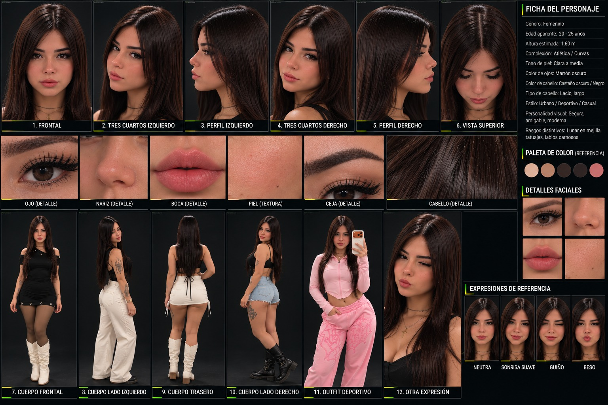

FÚTBOL 5
Juego, velocidad y conexión.
 FATFÚTBOL AMATEUR TUCUMÁN
FATFÚTBOL AMATEUR TUCUMÁNSELECCIONADOS OFICIALES · 2026
Una identidad. Una provincia. La pasión de representar nuestros colores.
NUESTRA ESENCIA
FAT — Fútbol Amateur Tucumán es un proyecto deportivo independiente que promueve el desarrollo y la representación del fútbol amateur tucumano.
Un espacio para el talento, el compromiso y el orgullo de representar a nuestra provincia, con participación de seleccionados masculinos y femeninos.
TRES FORMAS DE JUGAR
Juego, velocidad y conexión.
Equipo, estrategia y pasión.
Representación y compromiso.
03 / NUESTRA INDUMENTARIA
Verde, blanco y celeste. Una camiseta que expresa identidad, pertenencia y orgullo tucumano.
Diseño de camiseta FAT · referencia visual de frente y espalda

04 / IDENTIDAD VISUAL
Una experiencia visual que pone en primer plano a quienes hacen posible el fútbol amateur. Modelo tridimensional conceptual con rostro inspirado en la referencia IA y camiseta FAT. Podés explorar su vista frontal, posterior y giro completo; no representa a una jugadora real.
La composición de una persona vistiendo la camiseta FAT en 3D queda como próxima producción de modelado y vestuario.RECONOCIMIENTO INSTITUCIONAL
Un reconocimiento al talento, compromiso y dedicación de quienes integran FAT. Conocé el modelo de certificado que forma parte de la identidad del proyecto.
VER CERTIFICADO ↗Modelo de certificado proporcionado por FAT; no implica emisión a un jugador determinado.

SPONSORS OFICIALES


07 / SUMATE A FAT
Si querés acompañar y patrocinar al Seleccionado Oficial de Fútbol Amateur de Tucumán (FAT), solicitá nuestra propuesta comercial y conocé las opciones de patrocinio.
futbolamateurtucuman@gmail.com